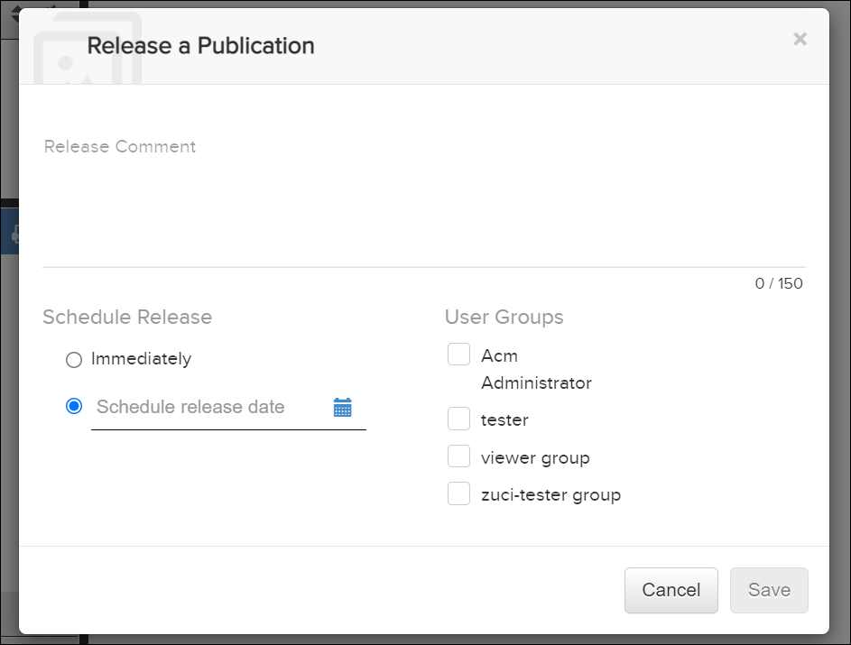

Not applicable for Pinpoint Standalone Light.
The release functionality is only available for publications that are published as draft versions to Pinpoint. A user with the appropriate privileges can review the draft and then release it to the user groups that have access to the publication revision.
Release a Publication Revision feature is designed as a scheduler, which enables the user to control the date and time when a publication can be viewed as a released version. The user can choose to schedule the publication release either immediately or at a desired date and time in future.
To schedule a release for publication revision, do these steps:
-
From the
 Publication Operations menu, select the
Publication Operations menu, select the  option.
Tip: If you do not see this menu option, you may not have the appropriate permissions.If it is the first revision of a publication, a Release a Publication dialog appears.
option.
Tip: If you do not see this menu option, you may not have the appropriate permissions.If it is the first revision of a publication, a Release a Publication dialog appears.
If it is the second (or a later) revision you will not see this dialog. The application will then copy the privilege settings from the previous revision and the release will be immediate.Note: A user can only release to user groups within their organization. -
Select the schedule release type.
- Select the option Immediately to release the publication on spot.
- Select the option Schedule release date to plan the
release in future. You can choose the desired date and time from the
date picker
 icon.
icon.
Note: Default selection is set to Immediately for the first time the UI is selected.